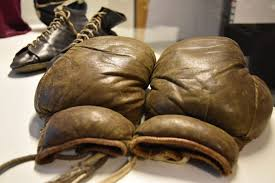

Idrott för de nyfikna
Idrott är en produkt av lek och spel. Lek anses gärna vara en frivillig verksamhet utan fasta regler och utan någon historia. När en lek blir mer formaliserad, det vill säga får ett regelverk och en historia kan man börja prata om ett spel. Vi skiljer mellan tre olika sorters spel. Färdighetsspel är en form av spel där deltagarnas färdigheter är avgörande för resultatet. Chansspel är spel där tillfälligheter och slumpen bestämmer utgången. Samarbetsspel är spel där deltagarna måste samarbeta inbördes för att nå på förhand formulerade mål. Idrott är en kombination av alla dessa tre spelformer. De olika spelformernas vikt varierar från idrott till idrott och, inte minst, från situation till situation. Graden av samarbete är större i en lagidrott än i en individuell idrott och det är primärt utövarens färdighet som ska mätas. Dock kan yttre omständigheter göra att slumpen spelar en avgörande roll. Snabba väderomslag i skididrott är ett exempel på detta.
Sport, idrott och tävlingar fanns redan i människornas äldre civilisationer, till exempel antas det baserat på fynd ha pågått sportaktiviteter i Kina kring 2 000 före Kristus. Andra äldre civilisationer där man antar att sport och idrott utövats är det gamla Egypten och Grekland.
Lite musik medans du läser?